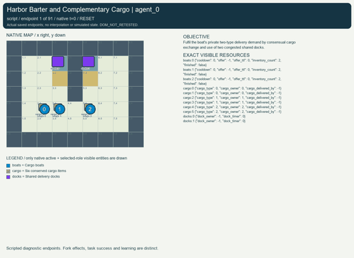
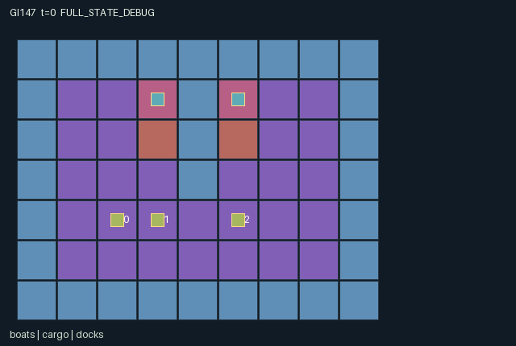

GI147 / SPATIAL
港口互补货物交易
船只各有私有的两类交付需求，通过双方同意的换货和拥挤的共享码头完成配送。
Original saved demonstration
Recorded native state, often authored scripts or interventions; information scope and failures are preserved in the original provenance. This is a saved demonstration, not live browser play.

Release verification episode
Untrained uniform legal actions. Actual JAX state sampled along the full original episode; full-state debug camera. No human performance or learning claim.

Run this game
crucibles play --game 147
Start Python locally, then open the address printed by the terminal. Installation, multiplayer, takeover and keyboard controls →
Objective, rewards & ending
Exact task contract
{
"objective": "Fulfil the boat's private two-type delivery demand by consensual cargo exchange and use of two congested shared docks.",
"natural_termination": "All three boats complete their private demands, otherwise horizon ninety. A completed boat leaves the collision world and has only NOOP until joint completion. Natural completion takes priority at the horizon.",
"interaction": "Each boat starts with two same-type items and capacity two. Mutual named acceptance exchanges exactly one advertised item each. A withheld offer or refusal can leave a partner without a necessary type. Shared dock leases and physical blocking delay competing deliveries.",
"observation_access": "Each role sees only its own three demand bits and delivered counts. Missing demand types are a random permutation sampled from the reset key, so each type has exactly two total demands. Terrain and dock telemetry are public. Other boats and cargo are visible within Manhattan distance three without occlusion; hidden record payloads are minus one."
}Declared per-step reward bounds: -1 to 8. Observability: partially_observable.
Rules
- Six individual cargo items exist, two of each type. Every boat starts with two items and can carry at most two.
- Each boat privately requires two different types. Missing types are permuted at reset, preserving two demands per type.
- Advertise a held type for four ticks. A trade needs live offers and both adjacent boats explicitly accepting each other.
- Trades swap one item each and conserve item identities. Refusal, expiration or withdrawal prevents the trade.
- Entering a shallow approach forces one recovery tick before the next move.
- Old dock leases govern movement. New three-tick reservations apply after movement; simultaneous requests use cyclic priority.
- Moves into occupied old cells or contested destinations fail. Completed boats depart and have only wait.
- Delivery consumes a demanded item into a permanent dock ledger. Individual reward is six per delivery, three on completion and minus one per active turn.
Original mechanism document (historical status wording retained)
# Harbor Barter and Complementary Cargo Status: AUTHORED_NOT_EXECUTED. This original initial-blind train-source proposal has no executed trajectory, R0 acceptance, learned policy or community animation acceptance. Three boats move on a public 9 by 7 harbor grid with a central pier, two shallow approaches and two shared delivery docks at (3,1) and (5,1). Each boat starts with two items of its own type and capacity two. The six item identities and types persist for the entire episode. At reset a key-driven permutation assigns one private missing type to each boat; it needs one item of each of the other two types. Thus aggregate demand is exactly two of every type, while a boat does not receive other boats' demand rows. The reset key is used directly and is not retained in state. Source: candidate.py:L12-L44. Movement is simultaneous. Another active boat's old cell is unavailable even if it will leave; all requests to a shared destination fail. A completed boat leaves the collision world. The old dock reservation blocks another boat's attempted entry, but the movement mask remains a terrain/recovery mask: a denied lease entry is a legal attempted move with no displacement. Entering a shallow tile sets cooldown one, so the next transition cannot move; that stationary turn may still be used for communication, exchange or booking. There are no swaps or follow-through moves. Source: candidate.py:L76-L98, candidate.py:L110-L205, candidate.py:L128. Actions five through seven advertise an actually held cargo type, action eight withdraws, and the offer lasts four ticks. Action nine names the next id modulo three; action ten names the previous id. An exchange occurs only if adjacent boats name each other in the same joint action, both old offers remain live, and both still own an item of their advertised type. The lowest-id matching item is exchanged in each direction. Every actor names only one partner, so mutually consenting pairs are disjoint; refusing or choosing someone else preserves ownership. Offers are cleared after trade. No exchange condition uses the private demand of the counterparty. Source: candidate.py:L130. Old reservations govern movement and delivery. Afterwards reservations expire or are released by action thirteen, and nearby action-eleven requests are settled in cyclic priority (id minus old t modulo three). A newly booked dock lasts three transitions. A physically occupied free dock can be booked only by its occupant. A nearby requester selects the lowest-index dock; a live booking is not renewed by an attempted reserve. Reserving can hold a scarce opportunity while another boat approaches, but it consumes a turn and cannot forcibly evict an occupant. Source: candidate.py:L151. Action twelve deposits the lowest-id owned item that is still privately demanded, only while at an accessible dock. The cargo's owner changes to minus one, its credited boat is written permanently, and its physical location remains the actual dock tile. There is no cargo spawning or deletion. A boat finishes after two demanded deposits, departs and retains only wait. Its remaining inventory is then empty because it started with two, exchanges are one-for-one, and two items were delivered. Source: candidate.py:L170, candidate.py:L46-L57, candidate.py:L76-L98. The conservation obligations are six physical items at all times, exactly two items of each immutable type, one owner or one permanent credited delivery per item, and no boat inventory above two. One-for-one exchange preserves counts; delivery transfers a real item into the dock ledger without allowing later pickup. Delivered counts are at most one per demanded type. Offer timers are in [0,4], dock timers in [0,3], recovery in [0,1], and ownership/type ids are bounded signed integers. The manifest declares reconstructed totals and nonnegative counters; these are static source arguments pending independent execution. Per-transition individual reward is six for its own delivery, three for newly finishing, and minus one while it was active at the transition start. The bound is [-1,8]. A departed boat has zero subsequent reward. The joint episode ends naturally when all three have finished, otherwise at horizon ninety; there is no implied guaranteed completion under arbitrary private demands and strategic withholding. Natural completion takes priority at the horizon. Terminal calls preserve the state and clock with zero reward and all dones true. Source: candidate.py:L110-L205, candidate.py:L106-L108. Observation width is 3 public + 10 self + 63 terrain + 24 boat + 36 cargo + 10 dock = 146, integer-valued float32 in [-1,90]. Private demand and delivered-count vectors appear only in the owning row. Terrain and dock lease telemetry are public. Other boats, advertised offers and cargo ownership are visible within Manhattan three without occlusion; hidden dynamic payloads are minus one with explicit visibility flags. Rendering uses these same visibility masks and never publishes private demand as a boat attribute. Source: candidate.py:L64-L74, candidate.py:L46-L57. Plausible untested strategies include early bilateral trades followed by staggered dock use, or holding a type and reserving a dock until a desirable partner is positioned. A boat's best response can depend on whether another accepts, withdraws, blocks an approach or books the desired dock. It can be beneficial to spend a shallow-tile recovery turn negotiating. Cooperation can enable all deliveries while timing and scarcity make individual delay costs conflict. These are hypotheses, not measured equilibrium, learning or transfer results. The first literal script proposes two mutual trades; its actions do not depend on the sampled demands. The second stops after approaches, recovery, bookings and dock entry, without asserting that the private demand permits a particular unload. Paired branches isolate refusal and a booking decision. All are UNEXECUTED_AUTHOR_HYPOTHESIS. Later variants could alter dock topology, offer lifetime or the private matching distribution, with new source identities and appropriate conservation review. Scene events contain only public dock owners, timers and the conserved cargo count. Trade events and delivery flags are present in audit state but do not leak through global role-view event overlays. Real cargo follows its boat or remains at its delivery tile. The declarative scene is not itself an adapter, replay or verified animation. Community reference attribution (supplied frozen files only; no external lookup or execution): - [JaxMARL_README.md](https://github.com/bold-lab-ai/JaxMARL/blob/main/README.md); supplied SHA-256 `6649d04f5ed05d620e78e8416a00d4db841cf2633ae60fdb3c9729e037a71c15`. Parallel multi-agent API and separate agent-keyed integration convention; no environment source, layout or rules copied. - [Pgx_README.md](https://github.com/sotetsuk/pgx/blob/main/README.md); supplied SHA-256 `153f44999e55d5df3e51e13dee6ef418cc9704ddfa26206f1dc5789b9cbbf8df`. Explicit legal masks, terminal separation and caller-supplied randomness as API concepts; no board implementation copied. - [PureJaxRL_README.md](https://github.com/luchris429/purejaxrl/blob/main/README.md); supplied SHA-256 `d5f40182c924a42cec820931e61a7d5070e48c4c8413c7d16455abc6ea0ef6b0`. Algorithm implementation and end-to-end JAX training context only; it is not an environment catalogue and no learner code is adopted. - [Craftax_Baselines_ppo_rnn.py](https://github.com/MichaelTMatthews/Craftax_Baselines/blob/main/ppo_rnn.py); supplied SHA-256 `5f93e6a7c3a1e0c551831d75be311735ba495dfdecae51787a1c03a27b1cd011`. Recurrent PPO/reset-boundary integration reference only. Its source explicitly attributes adaptation to Chris Lu and PureJaxRL; none of that code is copied or executed here. - [Craftax_README.md](https://github.com/MichaelTMatthews/Craftax/blob/main/README.md); supplied SHA-256 `7f9757a2047143cf183f7e2e84851a740f386af80dbee050c89b316d66a3d3ff`. Persistent spatial objects/resources and source-bound rendering as design concepts; no Craftax mechanics implementation, layout, texture or score is reused. No upstream code is copied. These are original substantive rules under the assigned contract. The source kernel uses the flat array boundary; a JaxMARL agent-keyed public adapter, native replay and animation remain separate implementation responsibilities. The frozen scientific learner is not modified by this package. New A/O/U shapes require matching downstream metadata and policy banks, and authored interaction does not establish meta-learning or transfer. Input authority: batch_authorization.json SHA-256 `ac3dcccc5abcd2f8b4239552c1f42f80cd88625264c7eca27e02392f3dc14a00`; all 20 listed physical inputs matched their declared bytes and hashes. Only this sanitized batch, its contracts and the supplied official reference snapshots were read. No prior candidates, outcomes, heldout tests, trained policies, feedback, remote tool, numerical library or source import was used. Source SHA-256: `644e8a7b3ff57a0ef176b7eb23e05748452733331f04a1f279793e500c796109`. Signed integer design values are represented as int32, boolean values as bool; only returned observations and rewards are float32. PRNG keys remain caller-owned. No source versions beyond initial attempt_00 were generated.
Commands
Roles & abilities
agent_0 boat_0_initial_type_zero
agent_1 boat_1_initial_type_one
agent_2 boat_2_initial_type_two
Observation permissions
Training receives only the original observation rows. Role cameras use declared visibility; debug cameras are explicitly marked. Local benchmark records log debug exposure and role takeover history.
Exact observation layout
[
{
"slice": [
0,
3
],
"meaning": "Public t, joint done, conserved cargo total",
"visibility": "public"
},
{
"slice": [
3,
13
],
"meaning": "Self id, x, y, movement cooldown, three private demand bits, three private delivered counts",
"visibility": "self"
},
{
"slice": [
13,
76
],
"meaning": "Public 7 by 9 static harbor terrain, row-major yx",
"visibility": "public"
},
{
"slice": [
76,
100
],
"meaning": "Three boat records: visible, x, y, cooldown, offered type, offer TTL, inventory count, finished; Manhattan-three local visibility; hidden payload minus one",
"visibility": "local"
},
{
"slice": [
100,
136
],
"meaning": "Six cargo records: visible, x, y, immutable type, owner, delivered-by id; Manhattan-three local visibility; hidden payload minus one",
"visibility": "local"
},
{
"slice": [
136,
146
],
"meaning": "Two public dock records: visible, x, y, lease owner, lease timer",
"visibility": "public"
}
]Entity visibility & attributes
[
{
"id": "boats",
"kind": "agent",
"count": 3,
"position": [
"agent_pos"
],
"active": [
"agent_active"
],
"visibility": [
"agent_vis"
],
"attributes": [
{
"state_path": [
"cooldown"
],
"meaning": "Remaining movement recovery ticks",
"display": "number"
},
{
"state_path": [
"offer"
],
"meaning": "Advertised type or minus one",
"display": "category"
},
{
"state_path": [
"offer_ttl"
],
"meaning": "Offer validity ticks remaining",
"display": "bar"
},
{
"state_path": [
"inventory_count"
],
"meaning": "Physical items aboard, maximum two",
"display": "number"
},
{
"state_path": [
"finished"
],
"meaning": "Private delivery contract completed; boat has departed",
"display": "flag"
}
]
},
{
"id": "cargo",
"kind": "object",
"count": 6,
"position": [
"cargo_pos"
],
"active": [
"cargo_active"
],
"visibility": [
"cargo_vis"
],
"attributes": [
{
"state_path": [
"cargo_type"
],
"meaning": "Immutable cargo type zero, one or two",
"display": "category"
},
{
"state_path": [
"cargo_owner"
],
"meaning": "Current boat id or minus one if delivered",
"display": "category"
},
{
"state_path": [
"cargo_delivered_by"
],
"meaning": "Credited boat id or minus one if undelivered",
"display": "category"
}
]
},
{
"id": "docks",
"kind": "gate",
"count": 2,
"position": [
"dock_pos"
],
"active": [
"dock_active"
],
"visibility": [
"dock_vis"
],
"attributes": [
{
"state_path": [
"dock_owner"
],
"meaning": "Lease holder boat id or minus one",
"display": "category"
},
{
"state_path": [
"dock_timer"
],
"meaning": "Lease transitions remaining",
"display": "bar"
}
]
}
]Actual verification & provenance
Per-game execution receipt
{
"game": "gi147",
"status": "PASS",
"verification_revision": 2,
"source_sha256": "644e8a7b3ff57a0ef176b7eb23e05748452733331f04a1f279793e500c796109",
"seed": 20261101,
"runtime": {
"jax": "0.4.38",
"numpy": "1.26.4",
"devices": [
"TFRT_CPU_0"
]
},
"dimensions": {
"num_agents": 3,
"observation_size": 146,
"num_actions": 14,
"max_steps": 90
},
"checks": {
"eager_reset": {
"status": "PASS",
"seconds": 2.278327465057373
},
"observation_spaces_legal_masks": {
"status": "PASS",
"seconds": 1.8881824016571045
},
"eager_step": {
"status": "PASS",
"seconds": 1.6292569637298584
},
"jit_reset": {
"status": "PASS",
"seconds": 0.2809171676635742
},
"jit_step": {
"status": "PASS",
"seconds": 1.3075599670410156
},
"eager_jit_integer_parity_float_measurement": {
"status": "PASS",
"seconds": 0.0019469261169433594
},
"jit_vmap_reset": {
"status": "PASS",
"seconds": 0.3638424873352051
},
"jit_vmap_step": {
"status": "PASS",
"seconds": 2.2655208110809326
},
"outer_autoreset_api": {
"status": "PASS",
"seconds": 1.5725383758544922
},
"full_original_horizon_episode_and_render": {
"status": "PASS",
"seconds": 1.0656118392944336
}
},
"human_scores": null,
"browser_controls": "PENDING",
"failures": [],
"elapsed_seconds": 13.351244926452637,
"float_parity_max_abs": 0.0,
"numerical_parity": "EXACT",
"raw_terminal_absorbing": "PASS",
"terminal_outer_reset": "PASS",
"episode_steps": 90,
"scripted_random_returns": [
-90.0,
-90.0,
-90.0
],
"terminal": true,
"demo_information": "FULL_STATE_DEBUG",
"demo_frames": 31,
"render_roles_checked": 3
}Chromium control verification
{
"game": "gi147",
"status": "PASS",
"human_scores": null,
"engineering": true,
"checks": [
"catalog_selected_and_real_native_reset",
"keyboard_native_direction_command",
"dom_queue_and_native_step",
"second_participant_ownership_and_native_joint_step",
"all_roles_individually_controllable_no_role_cap",
"explicit_debug_camera",
"release_to_pure_ai_without_reset",
"close_session_preserves_log"
],
"ui_sha256": "96243f9de144b80b5e20a114330e2206bdcd58d3efc9c6f13bbc08b95cacc14d",
"keyboard_action_id": 1,
"seconds": 7.009661674499512
}Original identity and file hashes
{
"id": 147,
"key": "gi147",
"title": "港口互补货物交易",
"summary": "船只各有私有的两类交付需求，通过双方同意的换货和拥挤的共享码头完成配送。",
"tags": [
"互补交易",
"码头竞争"
],
"family": "spatial",
"dimensions": {
"num_agents": 3,
"observation_size": 146,
"num_actions": 14,
"max_steps": 90
},
"source_sha256": "644e8a7b3ff57a0ef176b7eb23e05748452733331f04a1f279793e500c796109",
"manifest_sha256": "fca034b2982bf76f3f20c8627c6c1104565fb5892fdf92ed9ca4a870e0f04bf9",
"files": [
{
"file": "candidate.py",
"sha256": "644e8a7b3ff57a0ef176b7eb23e05748452733331f04a1f279793e500c796109",
"bytes": 13255,
"origin": "work/exp_2/game_incubator_v3/community_games222_225_visualization_root222_v1/native154_candidate/registry/v2/games/game-v3-00147/candidate.py"
},
{
"file": "manifest.json",
"sha256": "fca034b2982bf76f3f20c8627c6c1104565fb5892fdf92ed9ca4a870e0f04bf9",
"bytes": 12670,
"origin": "work/exp_2/game_incubator_v3/community_games222_225_visualization_root222_v1/native154_candidate/registry/v2/games/game-v3-00147/manifest.json"
},
{
"file": "scene.json",
"sha256": "a9cbad84777428dc3ed222e38cff937b5a841544258346ea835c150d6589061c",
"bytes": 6546,
"origin": "work/exp_2/game_incubator_v3/community_games222_225_visualization_root222_v1/native154_candidate/registry/v2/games/game-v3-00147/scene.json"
},
{
"file": "mechanism.md",
"sha256": "94b1d866e821a061592a5a8ebe4ac253d5f9e03a28cdc1cdeaba3bd2041ea2b6",
"bytes": 9344,
"origin": "work/exp_2/game_incubator_v3/sources/game-v3-00147/attempt_00/mechanism.md"
},
{
"file": "playthrough.json",
"sha256": "d94ac1b35142ec2c03f8a60bd96978b4762446090feef32c57493a018efe75aa",
"bytes": 3072,
"origin": "work/exp_2/game_incubator_v3/sources/game-v3-00147/attempt_00/playthrough.json"
}
],
"original_status": "NATIVE154_REFERENCE",
"original_saved_replay": true,
"release_validation": "PASS",
"human_scores": null,
"browser_validation": "PASS"
}